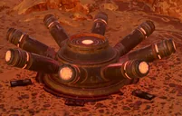

机器人 Hazards
the 机器人 in 绝地潜兵 2 will place traps for unsuspecting 绝地潜兵.
概述
机器人 Hazards are 环境危害 created by the 机器人. 机器人 Hazards are found in 机器人哨站 and fortifications.
Bot Hazards

When stepped on by a 生物 or otherwise damaged, it explodes and damages anything nearby.
级别: 机器人 Hazards
When touched by a 绝地潜兵, it slows them down significantly and inflicts slight 伤害.
级别: 机器人 Hazards